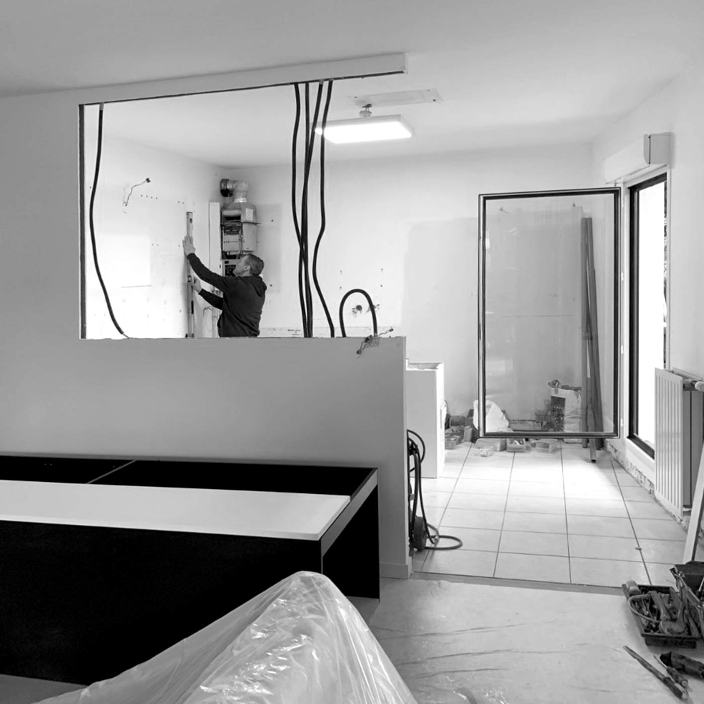
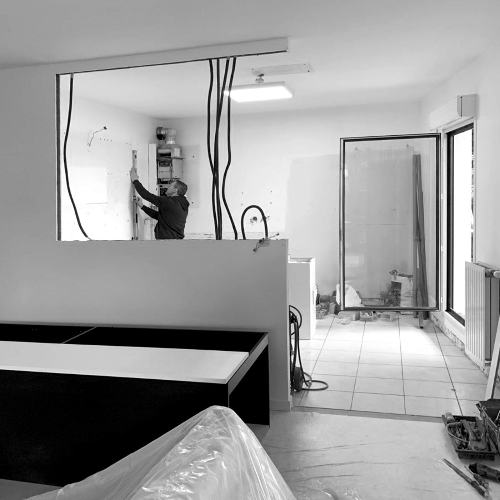

Initialement, les clients souhaitaient rénover l’intramuros de la cuisine uniquement. Mais la pièce était biscornue et peu lumineuse. Nous avons donc eu l’idée d’ouvrir partiellement la cusine sur le séjour afin de créer une profondeur sur la pièce de vie et amener un maximum de luminosité.
 
Avant & Pendant réalisation

Avant & Pendant réalisation
La cliente souhaitait tout de même conserver une séparation physique. Nous avons donc
dessiné une verrière en aluminium et verre. Nous l’avons voulue élégante et différente de ce que
l’on voit habituellement.
Pour cela, les montants en aluminium sont fins et plats et laqués dans un coloris sombre. Enfin,
les montants sont asymétriques pour créer du rythme et de la
personnalité.
La cuisine, elle est sobre mais contrastée avec son mange debout en marbre noir et sa
crédence veinée.
Le bois des meubles hauts est plutôt clair et s’assorti avec le mobilier déjà présent dans la pièce
de vie.
Nous avons rénové le sol existant, changé la chaudière, créé un faux plafond avec des spots
et créé des caissons au dessus des modules hauts.
Les murs et le plafond ont été enduits avec de la chaux dans un coloris pierre pour simuler une
boîte.
Durée des travaux : 3 Semaines

Ouvert du Lundi au Samedi
10h-12h / 14h - 18h30
Saverio Bisciglia : 06 09 45 92 45
Roberto Bisciglia : 06 99 14 22 14
Deborah Bisciglia : 06 32 19 57 41